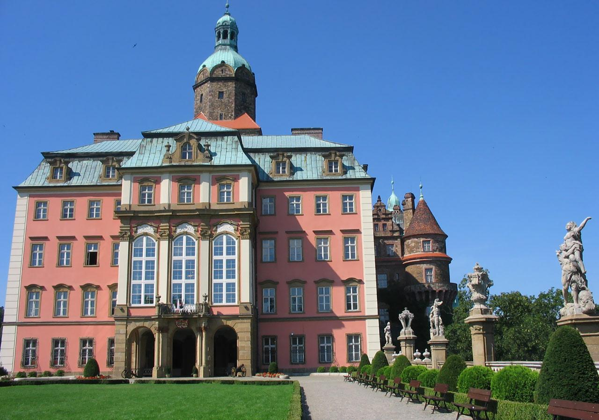
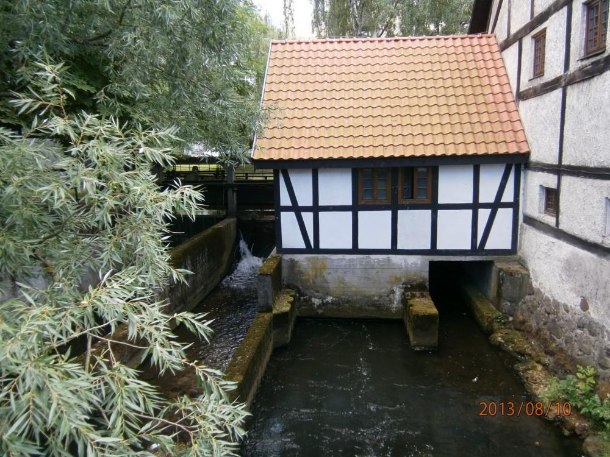
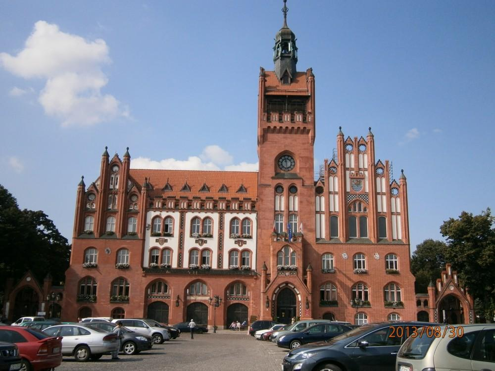

Dane o powiecie
| Siedziba | Słupsk |
| Powierzchnia | 2304 km² |
| Populacja | 98 249 |
Dane kontaktowe starostwa powiatowego
| Telefon | +48 59 841 85 00 |
| Adres | ul. Szarych Szeregów 14, 76-200 Słupsk |
| Strona | powiat.slupsk.pl |
Atrakcje turystyczne
Zamek Książ
Okazały i świetnie utrzymany zamek Książ, znajdujący się w granicach miasta Wałbrzycha, jest największym zamkiem Dolnego Śląska i trzecim co do wielkości w Polsce. Fragment zespołu pałacowego w postaci przepięknych, barokowych komnat udostępniony jest dla turystów.
Obecnie zamek Książ jest jednym z najciekawszych elementów Szlaku Zamków Piastowskich. Prócz luksusowego Hotelu Książ, dla majętnych, na zwiedzających czekają tu: restauracja, wspaniałe ogrody oraz ekskluzywna stadnina koni - Stado Ogierów Skarbu Państwa w Książu. Ciekawą sprawą są też organizowane tutaj walki i zwyczaje zaczerpnięte z czasów średniowiecza.
Źródło: polskieszlaki.plMłyn Zamkowy w Słupsku
Młyn Zamkowy w Słupsku to dawny gotycki młyn wodny pochodzący z początku XIV wieku. To jedna z najstarszych budowli przemysłowych w Polsce!
Niegdyś słupski młyn pełnił rolę spichlerza, a obecnie mieści się w nim część ekspozycji Muzeum Pomorza Środkowego w Słupsku. Ekspozycja w Młynie obejmuje Galerię Bursztynową oraz stałe i czasowe wystawy etnograficzne związane z tą częścią Pomorza.
Źródło: polskieszlaki.plRatusz w Słupsku
Neogotycki Ratusz Miejski w Słupsku pochodzi z 1901 roku i znajduje się w samym centrum miasta, na Placu Zwycięstwa.
Słupski Ratusz to jeden z piękniejszych magistratów na Pomorzu, powstał w miejscu dawnego bajora, zasypanego w ciagu 3 lat przez mistrza piekarnictwa niejakiego Wienandta, który rozkopał górę św. Piotra i nawiózł z niej około 30 tys. furmanek piachu.
Do zwiedzania udostępniona jest ratuszowa wieża. Po drodze na górę można podziwiać mechanizm ratuszowego zegara, portrety prezydnetów i burmistrzów miasta oraz kolekcję herbów polskich.
Źródło: polskieszlaki.pl